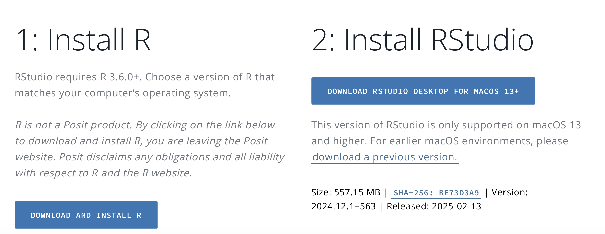

Instalar R y R Studio de acuerdo a las siguientes indicaciones: https://posit.co/download/rstudio-desktop/

Entorno de R Studio:
Objetos:
Son las estructuras de datos donde se almacenan valores en R. Pueden ser vectores, listas, matrices, factores, data frames, entre otros. Se crean asignando valores con <- o =.
Ejemplo:
x=100
z=200
y=x+z
yx=100
z=200
y=x+z
y## [1] 300Ejemplo:
suma <- function(a, b) {
return(a + b)
}
suma(3, 5) # Devuelve 8suma <- function(a, b) {
return(a + b)
}
suma(3, 5) # Devuelve 8## [1] 8install.packages("ggplot2")
library(ggplot2)datos <- data.frame(
Nombre = c("Ana", "Luis", "Carlos"),
Edad = c(25, 30, 28),
Ciudad = c("Madrid", "Barcelona", "Valencia")
)
datos <- data.frame(
Nombre = c("Ana", "Luis", "Carlos"),
Edad = c(25, 30, 28),
Ciudad = c("Madrid", "Barcelona", "Valencia")
)